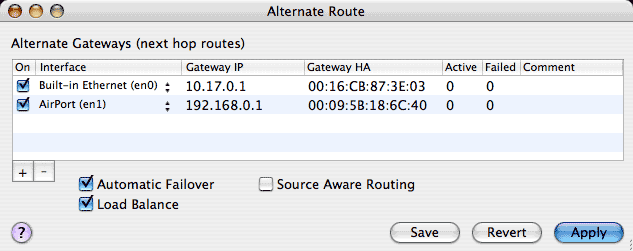
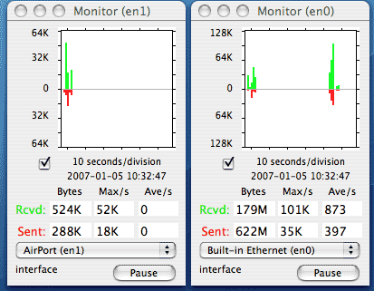
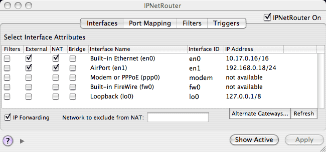
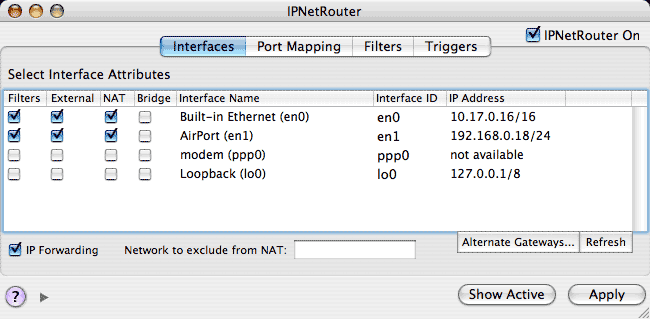
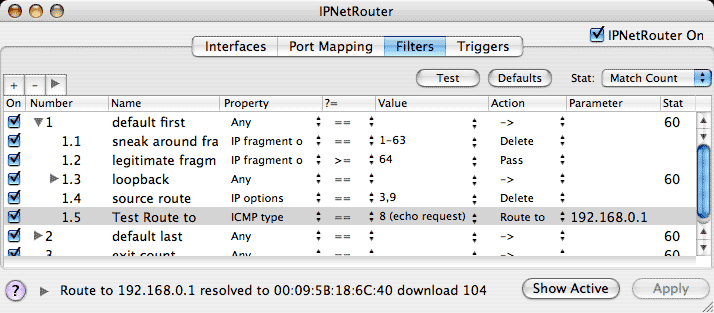
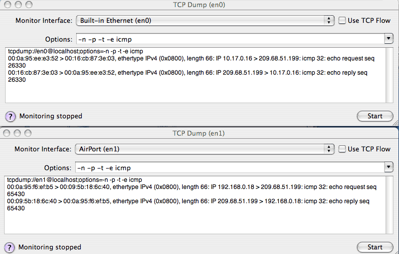
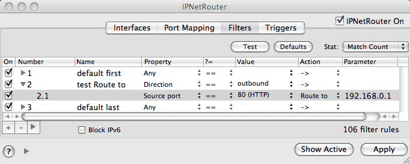

The Mac OS X network stack uses a single default gateway to route packets that cannot be delivered directly. Normally this gateway corresponds to the "Router" address for the first active service in the Network Preferences panel (the first active service normally captures both the Router and Name Server address supplied to the BSD stack)
The first step is to configure the Alternate Gateways you want to use by specifying their corresponding network Interfaces and IP address if necessary. Press "+" to add a row to the Alternate Route table and then select the corresponding network port under the "Interface" column. If the Network Preferences panel already has a "Router" address, the Alternate Route tool will fill that in for you. For ARP reachable devices such as Ethernet, the gateway hardware address will also be filled in automatically. Normally you should include both the default gateway from the Network Preferences panel and any others you wish to use. You can also specify alternate gateways on the same network port. The "Comment" column allows you to note what the gateway is for, and the "On" column allows you to selectively disable previously specified gateways.
When Load Balance is selected, packets for hosts on a directly attached network are delivered directly. Next IPNetRouterX calculates an alternate route index from the source and destination endpoints of each data flow. If you connect from port 42000 to port 80 for example, that data flow will be sent via alternate gateway 0, if you connect from port 42001 to port 80, that data flow will be sent out alternate gateway 1, and so on. Opening a single web page can often require multiple connections to retreive different elements of the page. The result is that traffic is split between multiple interfaces and gateways as shown at the left of the plots below.

On the right side of the plot, Load Balance was unchecked and the same page was reloaded. In this case all the web traffic is on en0 (the default route) but uses more bytes per second (bandwidth).
Automatic failover is similar to load balancing except that we employ different criteria to decide which gateway to use. When Automatic Failover is selected, we check each connection request for duplicate SYN segments and if a request is repeated more than 2 times, we try the next alternate gateway in order. When a gateway fails, it is possible to reroute duplicate connection requests before the original request times out so that failover becomes largely transparent.
In the left plot (en0), the first two connection attempts fail. In the right plot (en1), the third attempt succeeds. For each attempt after the 2nd, we rotate the gateway through the list of alternatives. If the 3rd attempt failed, we would try the first gateway again (or the 3rd gateway if one was specified).
If half of the connections through a gateway have failed in the last minute (the "Failed" column versus the "Active" column), subsequent connection requests will be redirected immediately without waiting for any segments to be retransmitted. As failed requests time out, we try the original path again so recovery is automatic.
If you are providing a service like Web or DNS and have more than one ISP connection, you can allow requests to arrive from either ISP on the corresponding IP address. When connections requests arrive on either link, the response is automatically routed back out the corresponding link overriding the default gateway if needed.
Mac OS X provides multi-link multi-homing which means your computer can be attached to more than one network at a time. Suppose you want to use both a cable modem and DSL connection for redundancy. You can install a PCI Ethernet card (or USB-to-Ethernet adaptor) to give your machine another Ethernet interface and attach this to your other Ethernet connection, but when you designate one of your interfaces as first in the network preferences panel, Mac OS X creates a "Default Route" using the router addres for that interface. Any traffic that doesn't come from a host directly attached to one of your Ethernets will use this default route instead of being sent back through the DSL or cable modem it arrived from. IPNetRouterX uses "Source Aware Routing" to get around this limitation. Internally IPNetRouterX maintains a connection table that tracks each data flow based on its network endpoints (IP address and port at both ends of the connection). When it sees an outbound packet that is part of a data flow that arrived from another network port, it will redirect the packet to use that network port instead. To use source aware routing, you must:
Notice you may need to use the "Route to" filter action in addition to Source Aware Routing if your servers can also initiate data flows. As each connection is established, IPNetRouterX remembers which port the initial connection request arrived on. If your service also needs to initiate data flows (such as FTP or SMTP), there will be no previous record of which port that data flow arrived from. The "Route to" filter action allows you to specify the IP address of the next hop gateway (in the "Parameter" column) for any packets matching this filter rule. For example, you could define a chain of filter rules that match packets originating from a particular service on your gateway (such as SMTP), and where they should be routed. The "Route to" filter action rewrites the Ethernet MAC address based on the next hop IP address you specify.
In order for IPNetRouterX to shift packets from one data link to another, its NKE (Network Kernel Extension) must be attached to the corresponding data links.
Normally you would enable NAT (Network Address Translation) on the same ports that are used with alternate gateways so that packets from those ports are translated to come from the corresponding IP address. When an altnerate gateway is used, the destination MAC (hardware address) is rewritten to target the new gateway, and the source MAC address is rewritten to reflect the interface the packet is from. By using NAT to rewite the source IP address, any response should be directed to the corresponding network port that transmitted the request.

Notice that in order to use the "Route to" filter action, you must also enable "Filters",

and specify a corresponding filter rule.

Finally, you can verify how the "Route to" action is working using TCP Dump as shown in the example below.

The upper trace shows the default route which is en0 with filter rule 1.5 turned off. When rule 1.5 is enabled, the same echo request is redirected out en1 as shown in the lower trace. Notice the Source MAC address has changed to that of en1, the destination MAC address has changed to match the "Route to" destination, and the source IP address has been change to match en1 by the NAT function. These changes allow the echo response to be received normally on en1.
Since it is necessary to rewrite the frame header containing the Ethernet MAC addresses, redirecting packets to a port that requires different frame headers (such as Ethernet versus PPP or PPPoE) is not supported at this time.
Suppose you have a server that provides remote file access on port 80 using the Rumpus Web File Manager and also does network backups using Retrospect. If you list the WAN interface first in Network Preferences, remote file access will work but Retrospect won't find local backup clients. If you list the LAN interface first, Retrospect will backup as expected, but remote file access will not be available. The "Route To" filter action allows you to work around this conflict as shown below.

Some network stacks allow specifying more than one default gateway and use "Dead Gateway Detection" to automatically select the next default gateway if the current gateway fails. The BSD stack used in Mac OS X intentionally separates the routing mechanism (table) from the routing policy (how values in the table are modified). There can be only one default gateway at a time, but it can change based on the routing policy implemented by other software.
Mac OS X is designed to support automatic failover by allowing the network stack to be configured dynamically on the fly in response to network events. If a data link such as your Ethernet becomes unavailable, Mac OS X will automatically try the next active "Port Configuration" listed in the Network Preferences panel. This is a huge advance over previous generations, but the network stack itself only detects when a data link becomes unavailable such as when your Ethernet becomes unplugged, or your laptop moves out of range of an AirPort base station.
Automatic Failover in IPNetRouterX augments this by redirecting packets as needed below the IP layer of the BSD stack. It does not actually modify the routing table directly to avoid conflicting with other system components.